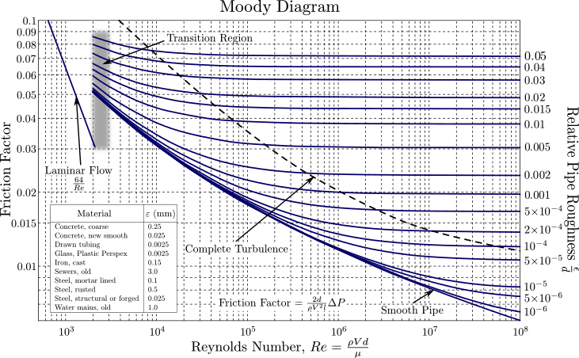

Academic · Computational fluid flow
Moody Diagram in MATLAB
Academic project
The project
I developed a Moody diagram from scratch in MATLAB, using an iterative method to solve turbulent-flow equations.
The challenge
The task was to turn an implicit flow calculation into a numerical procedure and a readable diagram.

My contribution
The work behind it
- 01
I formulated the turbulent-flow calculation for an iterative solution.
- 02
I implemented a fixed-point method in MATLAB.
- 03
I used the numerical calculations to construct the Moody diagram.
Outcome
What came out of it
A MATLAB implementation connecting fluid-flow equations, iteration and engineering visualization.
Methods & tools
- MATLAB
- Fixed-point iteration
- Turbulent flow